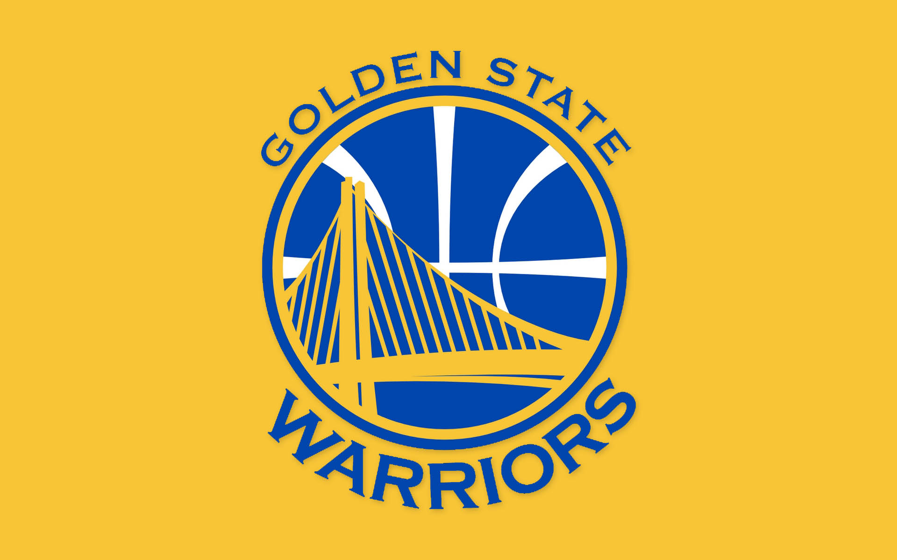

球队简介
金州勇士（Golden State Warriors，简称GSW），成立于1946年，最初名为费城勇士队（Philadelphia Warriors），后于1962年迁至加利福尼亚州的旧金山并更名为金州勇士。是一支位于美国加利福尼亚州旧金山的美国职业篮球队，分属于NBA联盟西部联盟的太平洋赛区。
球队的队徽和队色主要以金色和蓝色为主，队名“勇士”象征着球队的斗志和勇气。球队的格言为“全队即为一城”（The whole team is a city）。
他们的主场位于旧金山市的Chase Center，是一座现代化的篮球场馆，于2019年投入使用。
由于拥有一批出色的球员，勇士队成为NBA的豪门之一。这支球队以其出色的三分球和团队配合而闻名，被誉为“小个子革命”的先驱者，改变了NBA的比赛风格。
金州勇士队不仅在赛场上取得了辉煌的成绩，还在社区和慈善事业方面扮演了重要角色。他们积极参与各种慈善活动，支持青少年篮球发展，致力于改善社区教育和健康。
总的来说，金州勇士队代表着团队合作、奋斗和精神。他们不仅仅是一支篮球队，更是一个为社区和粉丝带来希望和鼓舞的象征。

现役球员介绍
| 球员姓名 |
球衣号码 |
位置 |
身高/m |
体重/kg |
国籍 |
生日 |
| 斯蒂芬·库里 |
30 |
后卫 |
1.88 |
83.9 |
美国 |
1988年3月14日 |
| 克莱·汤普森 |
11 |
后卫 |
1.98 |
99.8 |
美国 |
1990年2月8日 |
| 德拉蒙德·格林 |
23 |
前锋 |
1.98 |
104.3 |
美国 |
1990年3月4日 |
| 克里斯·保罗 |
3 |
后卫 |
1.83 |
79.4 |
美国 |
1985年5月6日 |
| 加里·佩顿二世 |
0 |
后卫 |
1.88 |
88.5 |
美国 |
1992年12月1日 |
| 安德鲁·维金斯 |
22 |
前锋 |
2.01 |
89.4 |
加拿大 |
1995年2月23日 |
| 凯文·鲁尼 |
5 |
前锋 |
2.06 |
100.7 |
美国 |
1996年2月6日 |
| 达里奥·萨里奇 |
20 |
前锋-中锋 |
2.08 |
102.1 |
克罗地亚 |
1994年4月8日 |
| 布兰丁·波齐姆斯基 |
2 |
后卫 |
1.93 |
93.0 |
美国 |
2003年2月25日 |
| 摩西·穆迪 |
4 |
后卫 |
1.96 |
95.7 |
美国 |
2001年5月31日 |
| 杰罗姆·罗宾逊 |
18 |
后卫 |
1.96 |
86.2 |
美国 |
1997年2月22日 |
| 乔纳森·库明加 |
00 |
前锋 |
2.01 |
102.1 |
刚果民主共和国 |
2001年10月6日 |
| 奥斯曼·加鲁巴 |
12 |
前锋 |
2.03 |
103.9 |
西班牙 |
2002年3月9日 |
| 莱斯特·基尼奥内斯 |
25 |
后卫 |
1.93 |
94.3 |
美国 |
2000年11月16日 |
| 帕特·斯宾塞 |
61 |
后卫 |
1.90 |
93.0 |
美国 |
1996年7月4日 |
| 特雷斯·杰克逊·戴维斯 |
32 |
前锋 |
2.06 |
111.1 |
美国 |
2000年2月22日 |
| 古伊·桑托斯 |
15 |
前锋 |
1.98 |
83.9 |
巴西 |
2002年6月22日 |
更多信息可参考NBA中国官网-勇士队 点击这里访问网站